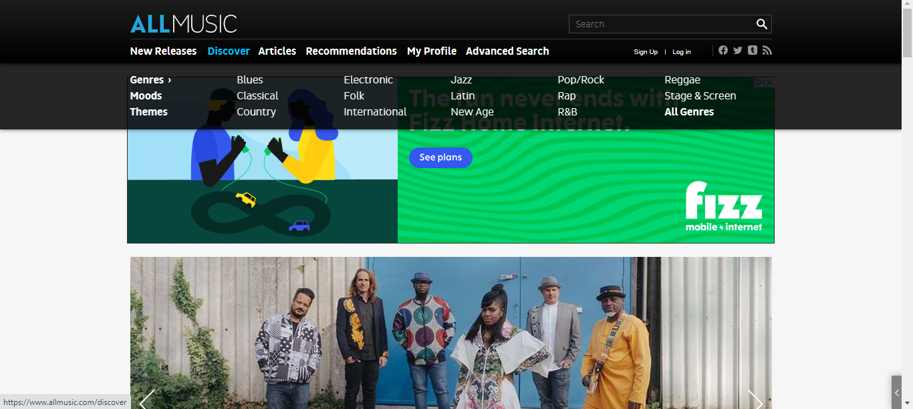
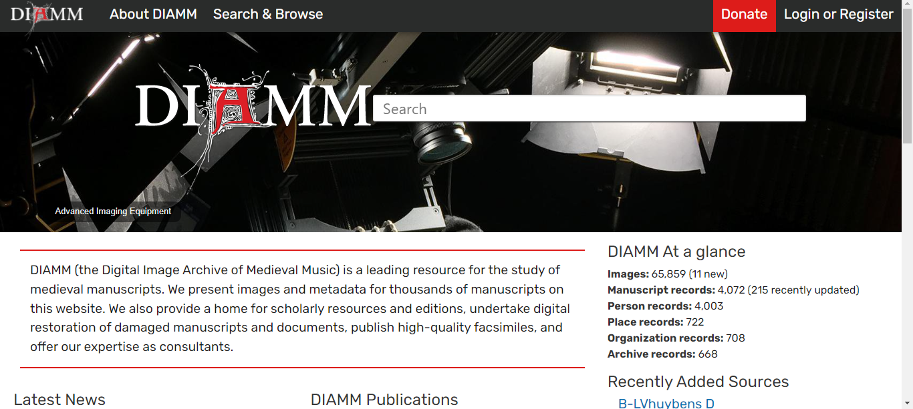
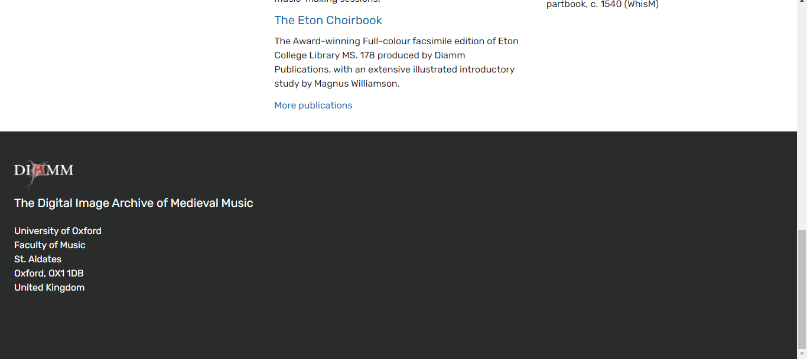
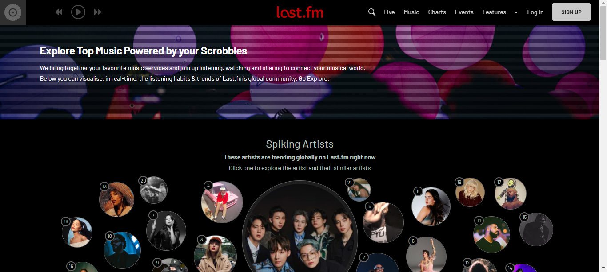
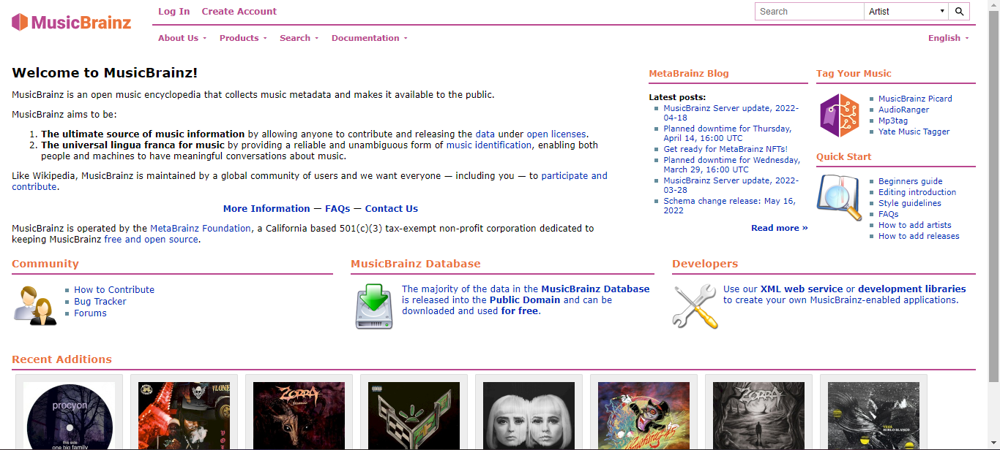
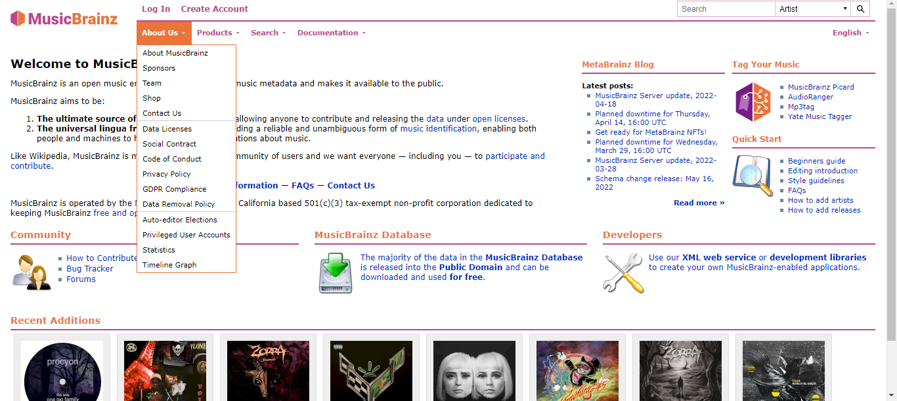
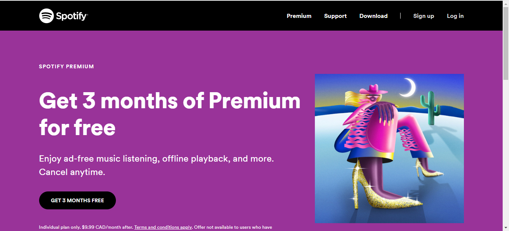

As the web begins to prepare for Web 3.0, one of the main features of website design today is accessibility. Dark mode has become a feature on laptops, tablets, and phones, and HTML5 has changed tag wording to be more accessible to screen readers. Accessibility also reinforces the importance of good website organization, as a good navigation bar can be used by anyone, regardless if they are using assistive technology or not

There is only a slight change from the 2018 AllMusic website, and that is ad placement. This could be because the Wayback Machine does not show ads, but on the 2022 live website, the ad placement is glaringly obvious. There is one when the website first loads, one that takes up a chunk of the sidebar, sliding the search further down, and even one as you scroll through the website that can be toggled away. Ads are something most users are used to, as they are one of the few ways a website can generate income, but in AllMusic's case, the ads take away from the website content, as they're constantly in a user's way. Having an ad in multiple places means a higher chance of a user clicking on it, but it can also lead to user frustration.

The new DIAMM website brings it into modern web times. The search bar is front and center, which is the most important part of the website. The website utilizes a column approach to showcase other information such as the news, recent publications, and recently updated sources. However, one of the downsides of having that information on the home page, is that it has to be constantly monitored in order for it to be up to date. The current DIAMM website gives no indication of when it was last updated, and even when you navigate to areas in order to find when it was last updated, it was sometime in 2021. Out-of-date information is harmful to users, so when including elements that need to be constantly updated, the website manager should be prepared to do that.

A fat footer and a mega menu have also been established. While the fat footer is not being utilized in the best way, it is still setting a precedent for use in the future. The mega menu is a great feature for DIAMM, which has always struggled with properly showing the third-level links. With the mega menu, a user can see at a glance all the links they may need and navigate accordingly.

Between 2018 and 2022 there were minimal design changes on Last.fm's website. Instead of focusing on user tracking, the first spot on the website is now held by spiking artists in an eye-catching image graph form. The website continues to utilize a fat footer with its navigation, as its global navigation menu continues to focus on features of the website, that a user may quickly need to locate.


While not a drastic overall change from their previous websites, what does stand out about MusicBrainz's 2022 website is the change in branding. After sticking with the purple/yellow color scheme for almost 18 years, the change to pink/orange, and the overall layout change bring a breath of fresh air to the website. MusicBrainz utilizes everything a user may need on the home page approach, with the dropdown menu having further information that only a select group of users may need. The touch of having recent additions on the bottom of the website is a good approach, and brings a human-like element to the website, showcasing the constant change and growth that has been present since the website first went live in 2000.

While different from the 2018 website, Spotify's 2022 website follows much of the same trends. Now with a global navigation bar and a fat footer, Spotify's 2022 website continues to be eye-catching and user friendly, to continue to entice users to sign up for the service. Using minimal pictures and graphics ensures a fast load time, and the color contrast ensures accessibility. The change to having black as the main color, instead of white, showcases how the dark mode change is influencing websites, as the Spotify app and web streamer are in dark mode.